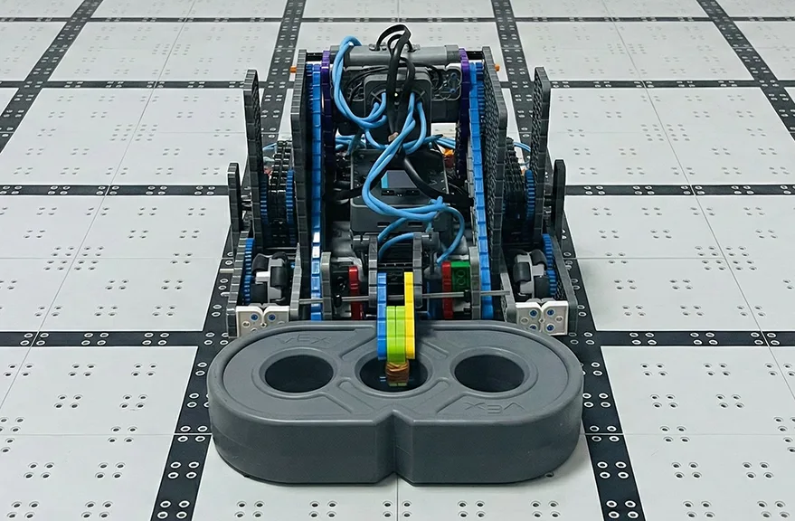

本章节详细记录了从设计图纸到实体机器人的转化过程。
内容涵盖了关键零部件的选型与统筹、各机械子系统的装配工艺、气动与电气系统的集成，以及底层控制程序的编写与调试。
本章核心任务： 完成一代车（Gen 1）的制造与调试，确保其具备基本的竞赛功能。
在正式组装前，团队依据第四章的设计方案进行了物料清单 (BOM) 的核对，并完成了 VEX IQ 主控的端口映射规划。
| 端口 | 设备 | 类型 | 备注 |
|---|---|---|---|
| 端口 1 | 左驱动电机 | 电机 | 反转 |
| 端口 6 | 右驱动电机 | 电机 | 反转 |
| 端口 4 | 升降电机 | 电机 | |
| 端口 11 | 翻转电机 | 电机 | |
| 端口 2 | 陀螺仪传感器 | 传感器 | |
| 端口 3 | 距离传感器 | 传感器 | |
| 端口 10 | 气动电磁阀 | 数字输出 | 数字输出端口 |
子系统描述： 双电机差速驱动底盘。
传动方案： 采用 48T:24T 齿轮组，实现 1:2 的增速比。该设计旨在保证机器人具备足够的场地覆盖速度。
工程挑战： 高速齿轮组对结构刚性要求较高，初步测试中发现底盘在大扭矩下有形变风险。
解决方案： 在底盘中部引入 "H" 型加强横梁结构，并增加额外的轴承座以支撑齿轮轴，显著提升了底盘的抗扭刚性。
抬升机构 (Lift)： 搭建单边四连杆结构。为降低电机负载，在力臂支点处配置了三角形挂点的橡皮筋重力补偿系统。测试显示，电机仅需极低电流即可维持悬停状态。
气动抓手 (Intake)：
随着各子系统组装完成，进入整车集成阶段。重点工作集中在电气布线与气路铺设。
为防止运动部件干涉线缆，采取了以下措施：
基于 VEXcode IQ 平台进行底层驱动配置。针对气动系统，需将控制端口配置为数字输出模式。
验证： 上传程序后，通过手动触发测试，确认电磁阀动作逻辑正确（True = 闭合/抓取，False = 断开/释放）。
为满足操作手在比赛中的即时反应需求，确立了以下人机交互逻辑：
| 功能模块 | 按键映射 | 控制逻辑描述 |
|---|---|---|
| 底盘移动 | 摇杆 (A/B/C/D) | 采用坦克模式 (Tank Drive)，左右摇杆独立控制对应侧电机。 |
| 气动抓手 | R Up / R Down | R1 触发闭合（抓取），R2 触发断开（释放）。利用气动瞬时响应特性实现快速抓取。 |
| 翻转手腕 | L Down | 单键切换。按下旋转至 180 度，再次按下复位至 0 度。 |
为提高机器人的环境感知能力及自动赛表现，集成了以下传感器模块：
前置安装。在自动程序中实现“接近检测”：当检测到前方障碍物或得分桩距离小于设定阈值（100mm）时，自动触发刹车逻辑，防止剧烈碰撞。
编写了首个基础自动例程：机器人前进 -> 陀螺仪修正直线 -> 距离传感器触发停止 -> 气动爪释放 -> 后退。测试成功率达到 90%。
历经两周的设计与制造周期，一代车（Gen 1）已完成全部硬件搭建与基础软件调试。
实施成果评估：
1. 气动系统： 成功应用，抓取力与响应速度达到预期，成为本机最大技术亮点。
2. 机械结构： 底盘与机械臂运行平稳，结构刚性满足比赛强度要求。
3. 控制系统： 实现了预期的半自动化辅助功能（如精准限速模式）。
目前系统状态良好，已具备参加实战测试的条件。下一阶段，我们将通过模拟赛与即将到来的北京城市赛，对机器人的综合性能进行极限测试。
